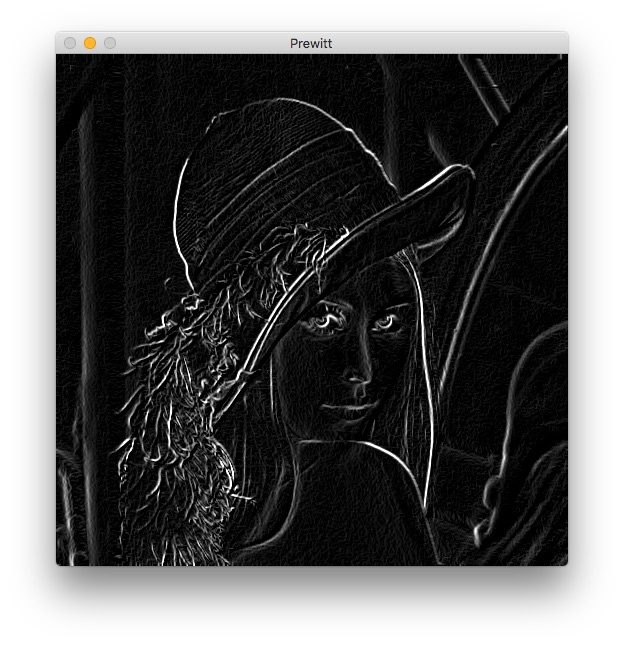
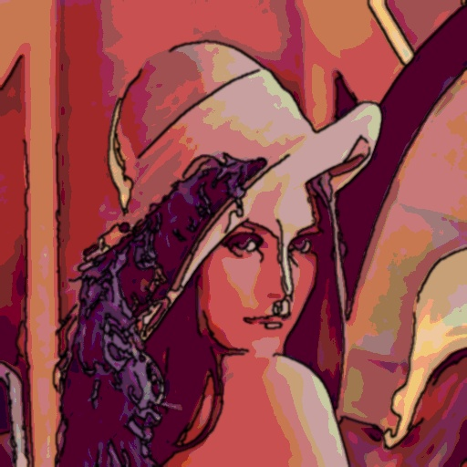
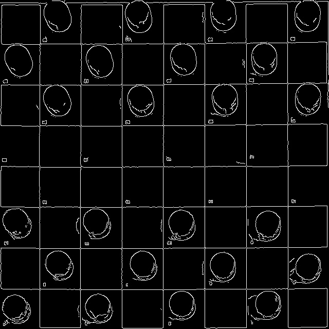
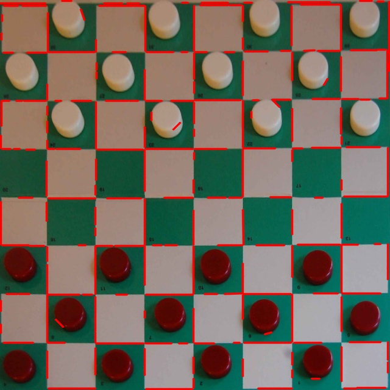
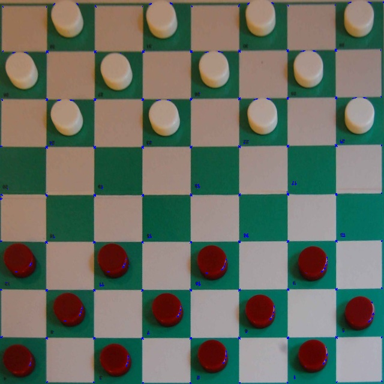

Tema 4 - Procesamiento de imagen: Filtrado y detección de bordes, líneas, puntos aislados y esquinas¶
En este tema aprenderemos a detectar zonas de interés en imágenes.
Detección de bordes¶
OpenCV tiene una función que implementa directamente el gradiente de Sobel en ambas direcciones usando un kernel de tamaño 3x3 (este es el valor por defecto si no se indica ksize):
# Gradiente X
sobelx = cv.Sobel(img, cv.CV_64F, 1, 0, ksize=3)
# Gradiente y
sobely = cv.Sobel(img, cv.CV_64F, 0, 1, ksize=3)
Ejemplo de uso:¶
import cv2 as cv
import numpy as np
img = cv.imread('lena.jpg', cv.IMREAD_GRAYSCALE);
# Comprobamos que la imagen se ha podido leer
if img is None:
print('Error al cargar la imagen')
quit()
# Calculamos gradiente horizontal y vertical
dx = cv.Sobel(img, cv.CV_64F, 1, 0)
dy = cv.Sobel(img, cv.CV_64F, 0, 1)
# Calculamos la magnitud
magn = cv.magnitude(dx, dy)
# Convertimos de float a uint para poder mostrar el resultado
dst = np.uint8(magn)
# Mostramos el resultado
cv.imshow('Sobel', dst)
cv.waitKey(0)
Para convolucionar una imagen con un filtro hay que usar el método filter2D. Ejemplo:
filtered = cv.filter2D(img, -1, kernel)
Donde kernel es la matriz que convolucionaremos con la imagen img. Hemos visto la sintaxis completa de este método en el tema de transformaciones, aunque puedes consultar un ejemplo de uso en este otro enlace.
Se puede usar OpenCV para extraer los gradientes en ambas direcciones de una imagen en escala de grises usando convoluciones mediante las fórmulas vistas en teoría, y esto es lo que haremos en el siguiente ejercicio.
Ejercicio¶
Podemos usar distintos kernels para implementar gradientes mediante convolución. Crea un programa llamado prewitt.py a partir del siguiente código, realizando las convoluciones correspondientes de los filtros Prewitt en horizontal y vertical y completando las partes indicadas con TODO:
import cv2 as cv
import numpy as np
import argparse
parser = argparse.ArgumentParser(description='Programa para calcular el filtro de Prewitt.')
parser.add_argument('--imagen', '-i', type=str, default = 'lena.jpg')
parser.add_argument('--salida', '-s', type=str, default = 'prewitt.jpg')
args = parser.parse_args()
# Cargamos la imagen
img = cv.imread(args.imagen, cv.IMREAD_GRAYSCALE)
# Comprobamos que la imagen se ha cargado correctamente
if img is None:
print('Error al cargar la imagen ')
quit()
# TODO: Obtenemos el gradiente horizontal mediante convolución
# TODO: Obtenemos el gradiente vertical mediante convolución
# TODO: Pasamos a float ambos gradientes
# TODO: Obtenemos la magnitud y la guardamos en magn
# Normalizamos para posteriormente poder convertir de float a uint sin tener valores fuera de rango
magn = magn-magn.min()
magn = magn/magn.max()*255
# TODO: Convertimos de float a uint para visualizar el resultado y lo guardamos en dst
# TODO: Guardamos dst en el fichero recibido como parámetro de salida
# Mostramos el resultado
cv.imshow('Prewitt', dst)
cv.waitKey(0)
El programa debe leer la imagen de entrada en escala de grises, calcular la magnitud del gradiente, mostrarlo y guardarlo en la imagen pasada como parámetro. En el caso de lena.jpg debería obtenerse la siguiente imagen:

Verás que el resultado de ejecutar ambos programas es distinto y que en este ejemplo particular los bordes se detectan mejor con Sobel que con Prewitt.
Reducción de ruido¶
Como hemos visto en teoría, los filtros Gausianos sirven para suavizar la imagen y eliminar ruido. Se suelen usar como paso previo a los sistemas de detección de bordes para evitar que el ruido les afecte.
En OpenCV podemos implementar un filtro Gaussiano mediante la función GaussianBlur, que requiere que indiquemos el tamaño del filtro y su desviación típica:
dst = cv.GaussianBlur(src, (3,3), 0) # Realiza un filtrado gaussiano con un kernel de 3x3 píxeles y desviación típica 0
Esta función admite más parámetros, como la desviación típica en el eje Y (si se omite es la misma que en el eje X) o el tipo de interpolación en los bordes (por defecto, cv.BORDER_DEFAULT).
También podemos aplicar un filtro bilateral del siguiente modo:
dst = cv.bilateralFilter(src, 15, 80, 80) # Aplica un filtro bilateral con un diámetro de 15 pixeles vecinos y una intensidad mínima 80.
Como ves, los últimos parámetros son dos umbrales en lugar de uno (es algo complicado de explicar, pero se usan para las imágenes en color).
Normalmente se utiliza el mismo valor para ambos umbrales. Si es pequeño (< 10), el filtro no tendrá mucho efecto. Si es grande (> 150) tendrá un efecto fuerte, haciendo que la imagen tenga un estilo de cómic (cartoon). Para más información se puede consultar la referencia de la función.
Por último, en OpenCV podemos usar un filtro Canny de la siguiente forma:
dst = cv.Canny(src, 100, 200) # Filtro canny con los umbrales minimo y maximo (hysteresis) proporcionados
Para más información sobre Canny en OpenCV puedes consultar este enlace. Tal como ocurre con las funciones anteriores, los filtros Canny también pueden tener más parámetros.
Ejercicio¶
Vamos a hacer un ejercicio usando todos los filtros anteriores. En este caso partiremos del siguiente código que debes descargar, completando las instrucciones indicadas con TODO. Se trata de un ejercicio para cartoonizar una imagen. Llama al siguiente programa cartoonize.py.
import cv2 as cv
import numpy as np
import argparse
parser = argparse.ArgumentParser(description='Programa para cartoonizar una imagen.')
parser.add_argument('--imagen', '-i', type=str, default = 'lena.jpg')
parser.add_argument('--salida', '-s', type=str, default = 'cartoonized.jpg')
args = parser.parse_args()
# Cargamos la imagen
img = cv.imread(args.imagen)
# Comprobamos que la imagen se ha podido cargar
if img is None:
print('Error al cargar la imagen')
quit()
########## BORDES ############
# Aplicamos un filtro de mediana (cv.medianBlur) de tamaño 7x7 para suavizar la imagen
# TODO
# Usamos Canny para detectar los bordes con un umbral en el rango [50, 150]
# TODO
# Dilatamos los bordes usando la función dilate con un filtro cuadrado de tamaño 2x2
# TODO (guardar en imgCanny)
# Escalamos los valores resultantes en el rango [0...1] y los invertimos.
# Esta operación implícitamente convierte el resultado (imgCannyf) a float64
imgCannyf = 1 - (imgCanny / 255)
# Sobre el resultado anterior aplicamos un filtro gaussiano de 5x5 pixels con desviacion tipica 0
# TODO: Guardar en bordesf
# Mostramos los bordes
cv.imshow('Bordes', bordesf)
########## COLOR ############
# Sobre la imagen original (img), aplicamos un filtro bilateral de diámetro 9 con umbrales 150 y 150
# TODO: Guardar en imgBF
# Truncamos los colores. En este caso usamos un valor de 40, cuanto más alto más "cartoonizado"
div = 40
quantized = (imgBF // div) * div
# Mostramos el resultado de color
cv.imshow('Color', quantized)
# Lo convertimos a float64 para las siguientes operaciones
# TODO: Guardar en resultf
########## UNIÓN DE BORDES Y COLOR ############
# Usamos merge para crear una imagen de 3 canales con los bordes
imgCanny3c = cv.merge((bordesf, bordesf, bordesf))
# Multiplicamos las matrices de color y bordes para obtener la imagen final
# TODO
# Convertimos el resultado anterior en una imagen de 8 bits (uint8)
# TODO: Guardar en result
# Mostramos la imagen final y la guardamos
cv.imshow('Result', result)
cv.imwrite(args.salida, result)
cv.waitKey(0)
El programa debería obtener exactamente esta salida:

Pista: Si en algún momento se muestran errores relacionados con los tipos de datos de las imágenes, puedes usar las siguientes
shapeydtypepara consultar de qué tamaño y tipo son:
print(imagen.shape, imagen.dtype)
Detección de líneas¶
La forma más sencilla para ejecutar la transformada de Hough para detectar líneas es la siguiente:
lines = cv.HoughLinesP(src, lines, rho, theta, threshold)
src: Imagen de un canal en escala de grises (aunque realmente suele ser binaria, ya que Hough se usa tras applicar Canny).rho: Resolución de la distancia del acumulador (en píxeles).theta: Resolución del ángulo del acumulador (en píxeles).threshold: Umbral del acumulador. Sólo se devuelven aquellas líneas que tienen más votos que este umbral.
El resultado se guarda en lines, que es un vector de líneas. A su vez, cada línea es otro vector de 4 elementos (x1, y1, x2, y2), donde (x1,y1) y (x2, y2) son los puntos extremos de la línea.
Además de estos parámetros, hay otros dos opcionales: minLineLength, que indica la mínima longitud de una línea para descartar los segmentos más cortos que esta longitud, y maxLineGap, que es el máximo salto permitido entre puntos de la misma línea para enlazarlos.
Como hemos visto, la función Hough debe usarse siempre tras un detector de bordes. Por ejemplo:
edges = cv.Canny(src, 50, 200, None, 3)
lines = cv.HoughLinesP(edges, 1, np.pi/180, 50, None, 50, 10)
Veamos un programa completo que usa Hough y muestra las líneas detectadas sobre la imagen:
import cv2 as cv
import argparse
import numpy as np
parser = argparse.ArgumentParser(description = 'Programa para obtener las líneas usando la transformada de Douglas Peucker')
parser.add_argument('--imagen', '-i', type=str, default='corrected.jpg')
args = parser.parse_args()
# Cargamos la imagen
img = cv.imread(args.imagen)
# Comprobamos que la imagen se ha podido leer
if img is None:
print('Error al cargar la imagen')
quit()
# Detectamos bordes
edges = cv.Canny(img, 20, 100, 3)
cv.imshow('Bordes', edges)
# Ejecutamos Hough
lines = cv.HoughLinesP(edges, 1, np.pi/180, 20, None, 10, 0)
# Dibujamos las líneas resultantes sobre una copia de la imagen original
dst = img.copy()
if lines is not None:
for i in range(0, len(lines)):
l = lines[i][0]
cv.line(dst, (l[0], l[1]), (l[2], l[3]), (0,0,255), 2, cv.LINE_AA)
cv.imshow('Lineas', dst)
cv.waitKey(0)
La salida tras aplicar el filtro Canny:

Las líneas detectadas usando Hough:

La transformada de Hough también se puede utilizar para detección de otras formas geométricas, por ejemplo círculos. A continuación podemos ver un ejemplo de llamada a la función HoughCircles:
circles = cv.HoughCircles(img,cv.HOUGH_GRADIENT, 1, 20,
param1=50, param2=30, minRadius=0, maxRadius=0)
Puedes consultar la documentación de HoughCircles para obtener más información sobre estos parámetros.
La función approxPolyDP aproxima una curva o un polígono mediante otra curva/polígono con menos vértices, de forma que la distancia entre ambas sea menor o igual que la precisión especificada. Se implementa usando el algoritmo de Douglas-Peucker:
closed = True
epsilon = 0.1*cv.arcLength(contour, closed)
approx = cv.approxPolyDP(contour, epsilon, closed)
El parámetro epsilon es la máxima distancia del contorno al contorno aproximado, y closed indica si el contorno es o no cerrado.
Esta función suele usarse tras extraer los contornos de una imagen mediante la función findContours, la cual veremos en detalle en el siguiente tema de segmentación.
Detección de puntos aislados¶
Como hemos visto en teoría, la Laplaciana es la derivada del gradiente y se puede usar para detectar puntos aislados. Puede implementarse mediante una convolución con un kernel laplaciano, pero OpenCV proporciona directamente la función Laplacian, que internamente llama a Sobel para calcular los gradientes. Ejemplo de uso:
ddepth = cv.CV_16S
kernel_size = 3
dst = cv.Laplacian(src, ddepth, ksize=kernel_size)
Detección de esquinas¶
En OpenCV podemos detectar esquinas usando Harris mediante la función cornerHarris. Necesita como entrada una imagen en escala de grises y además los siguientes parámetros: el número de píxeles vecinos a tener en cuenta, el tamaño del filtro (apertureSize) para calcular los gradientes con Sobel, y el umbral de detección k, que es el único parámetro libre del algoritmo Harris:
blockSize = 2 # Tamaño del vecindario considerado para la detección de esquinas
apertureSize = 3 # Tamaño del kernel para el filtro de Sobel
k = 0.04 # Umbral de Harris
dst = cv.cornerHarris(src, blockSize, apertureSize, k)
Ejercicio¶
Copia el siguiente código, llámalo harris.py y completa las instrucciones marcadas con TODO:
import cv2 as cv
import argparse
import numpy as np
parser = argparse.ArgumentParser(description='Programa para calcular esquinas usando Harris.')
parser.add_argument('--imagen', '-i', type=str, default = 'corrected.jpg')
parser.add_argument('--salida', '-s', type=str, default = 'damasHarris.jpg')
args = parser.parse_args()
#Importamos la imagen
img = cv.imread(args.imagen)
# Comprobamos que la imagen se ha podido cargar
if img is None:
print('Error al cargar la imagen')
quit()
# Pasamos la imagen a escala de grises, y después a float32
# TODO (guardar en img_gray)
# Detectar las esquinas con Harris. Parámetros: blockSize=2, apertureSize=3, k=0.04.
# TODO (guardar en dst)
# Sobre la imagen original, poner en color azul los píxeles detectados como bordes.
# Son aquellos que en los que dst(i,j) tiene un valor no inferior a 10000.
# TODO (guardar en src).
# Mostrar por pantalla la imagen src y además guardarla en el fichero que se pasa al programa como segundo argumento
# TODO
La imagen resultante debe ser como esta:
